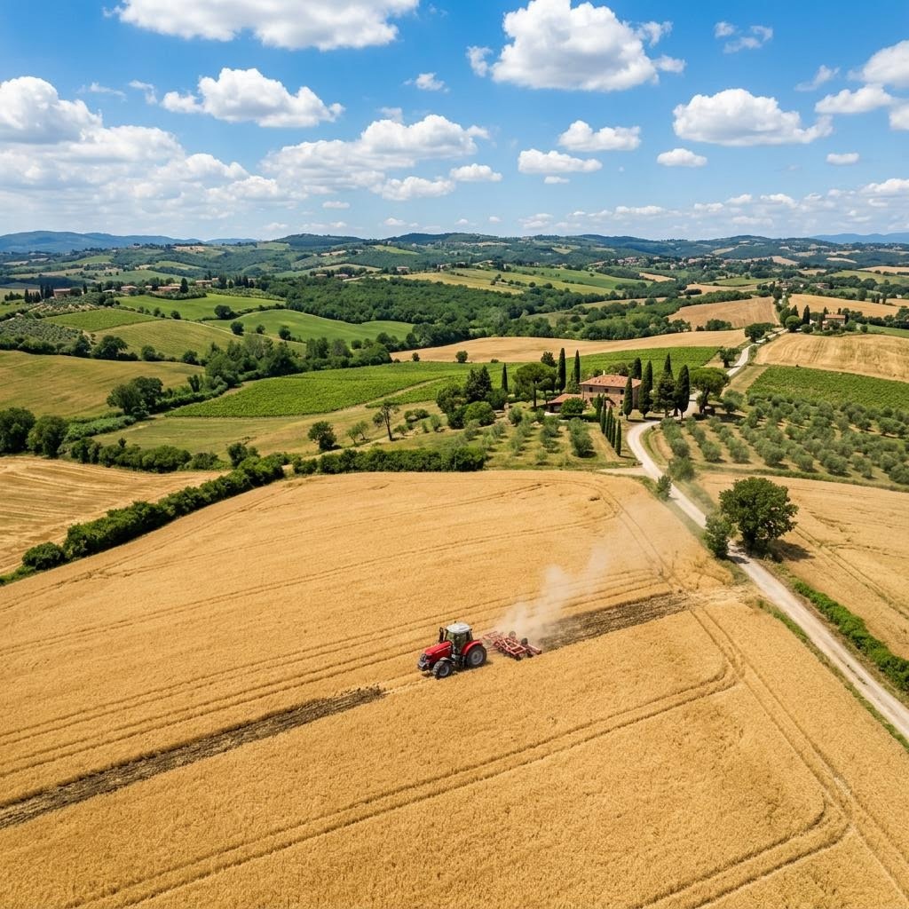

Focus sostenibilità: CAP Nord Ovest

Come è stato costruito questo Project Work
Questo sito è stato realizzato come Project Work nell'ambito del corso di Tecnologia Web per la Sostenibilità d'Impresa. L'obiettivo è analizzare e comunicare le performance di sostenibilità di CAP Nord Ovest – parte del sistema Consorzi Agrari d'Italia – attraverso una piattaforma web accessibile e strutturata.
Il lavoro combina competenze di sviluppo web (HTML, CSS) con una lettura critica dei documenti di rendicontazione non finanziaria, traducendo i dati del Bilancio di Sostenibilità in contenuti fruibili da diversi pubblici, inclusa la visualizzazione ottimizzata per dispositivi mobili.
Sezioni tematiche del sito
Standard internazionale di riferimento
Dati da fonte documentale ufficiale
Solo tecnologie web di base, nessun framework
Lettura integrale e analisi del Bilancio di Sostenibilità 2024 di CAP Nord Ovest (dati esercizio 2023). Identificazione degli indicatori ESG rilevanti secondo il framework GRI, delle iniziative sostenibili in atto e della struttura di governance aziendale. Estrazione e verifica dei dati quantitativi (KPI) direttamente dal documento originale.
Organizzazione delle informazioni in otto sezioni tematiche (Home, Chi siamo, Sostenibilità, Agricoltura 4.0, KPI ESG, Report, Metodologia, Contatti) per rendere la navigazione intuitiva e adatta a diversi tipi di utenti. Definizione della gerarchia visiva e della palette cromatica coerente con il settore agroalimentare.
Realizzazione del sito in HTML5 e CSS3, con attenzione alla responsività mobile-first, all'accessibilità (ARIA label, contrasto cromatico) e alla coerenza visiva. Nessun framework JavaScript o dipendenza esterna: il sito è volutamente leggero, autonomo e compatibile con qualsiasi browser moderno. Inserimento di grafici SVG/CSS per la visualizzazione immediata dei KPI.
Sulla base dei dati disponibili per gli esercizi 2022 e 2023, sono state elaborate stime indicative per il 2024–2025, applicando i trend osservati e tenendo conto degli obiettivi dichiarati (es. certificazione UNI/PdR 125:2022 sulla parità di genere, adeguamento CSRD). Le stime sono chiaramente marcate come elaborazioni didattiche.
Controllo dell'accuratezza dei dati rispetto alla fonte documentale originale, verifica incrociata dei KPI riportati, test di navigazione su desktop e smartphone, revisione dei testi per chiarezza e accessibilità linguistica.
Documento principale di riferimento. Contiene le informazioni su governance, ambiente, persone, prodotti, servizi e filiera relative all'esercizio 2023. Prima rendicontazione non finanziaria dell'azienda, redatta in anticipo rispetto agli obblighi CSRD. Disponibile nella sezione Report.
Informazioni generali sul sistema CAI, la struttura cooperativa e le attività dei consorzi aderenti sul territorio nazionale. Utilizzato per contestualizzare il ruolo di CAP Nord Ovest all'interno del gruppo cooperativo italiano.
Riferimento metodologico per l'interpretazione e la classificazione degli indicatori ESG. Il Bilancio di Sostenibilità di CAP Nord Ovest fa esplicito riferimento agli standard GRI (GRI 201, GRI 2-7, GRI 401, GRI 403, GRI 404, GRI 306, GRI 2-9, GRI 2-10, ecc.).
Normativa europea che estende e rafforza l'obbligo di rendicontazione non finanziaria. Contestualizza la scelta volontaria di CAP Nord Ovest di pubblicare il proprio bilancio in anticipo rispetto alle scadenze legislative previste.
La tabella riporta i principali standard GRI citati nel Bilancio di Sostenibilità 2024 e le aree coperte in questo sito.
| Codice GRI | Titolo | Sezione del sito |
|---|---|---|
| GRI 201-1 | Valore economico direttamente generato e distribuito | KPI ESG – Performance economica |
| GRI 2-7 | Dipendenti – composizione | KPI ESG – Dimensione sociale |
| GRI 401 | Occupazione (assunzioni, turnover) | KPI ESG – Dimensione sociale |
| GRI 403 | Salute e sicurezza sul lavoro | KPI ESG – Dimensione sociale |
| GRI 404 | Formazione e istruzione | KPI ESG – Dimensione sociale |
| GRI 306 | Rifiuti | KPI ESG – Dimensione ambientale |
| GRI 302 | Energia | KPI ESG – Dimensione ambientale |
| GRI 2-9 | Struttura di governance | KPI ESG – Governance |
| GRI 2-10 | Nomina e selezione dell'organo di governo | KPI ESG – Governance |
| GRI 205 | Anticorruzione | KPI ESG – Governance |
| GRI 418 | Privacy dei clienti | KPI ESG – Governance |